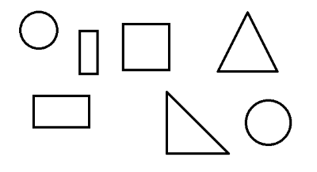
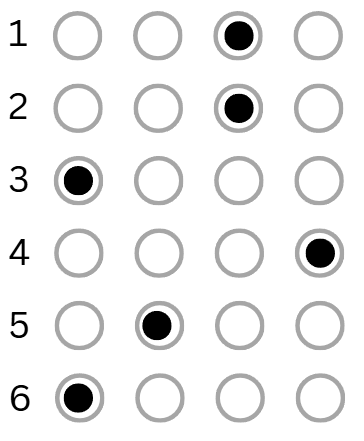

OpenCV
OpenCV is an open-source computer vision library used for image and video processing, offering a wide range of tools for real-time applications. It is widely used in fields such as computer vision, robotics, and machine learning.
OpenCV uses the BGR color format by default instead of RGB, meaning the blue channel comes first when working with color images. Grayscale images are represented using 8 bits per pixel, which allows for 256 intensity levels.
Write the import cv2 and/or import numpy as np statements at the beginning of every example.
Table of contents
- Basics
- Important methods
- Resizing, cropping, and warping perspective
- Shapes
- Stacking images next to each other
- Basic edge detection
- Detecting contours
- Face detection using Haar cascades
- Color segmentation
- The
imutilsmodule - OMR (Optical Mark Recognition)
Basics
# Displaying an image
img = cv2.imread("resources/image.jpg") # loading an image
print(img.shape) # height, width, channels (3 color channels means BGR, 1 means grayscale)
print(img.size) # the number of pixels inside the image
cv2.imshow("Output", img) # displaying the image
cv2.waitKey(0) # infinite delay (the window will not close immediately)
cv2.destroyAllWindows() # closing all OpenCV windows
# Displaying a video
cap = cv2.VideoCapture("resources/video.mp4") # loading a video
while True:
success, img = cap.read() # success - whether the operation was successful, img - the current frame
if not success:
break
cv2.imshow("Video", img)
# waitKey(0) blocks and freezes the frame until a key is pressed, whereas waitKey(1) allows continuous frame updates with minimal delay.
if cv2.waitKey(1) & 0XFF == ord("q"): # exit on pressing "q"
break
cap.release() # releasing the video capture object
# To display a webcam feed, we only need to change the beginning:
# cap = cv2.VideoCapture(0, cv2.CAP_DSHOW) # loading the default webcam (0 - default webcam id, cv2.CAP_DSHOW - increases startup speed on Windows)
# cap.set(3, 640) # width (id: 3)
# cap.set(4, 480) # height (id: 4)
Important methods
img = cv2.imread("resources/image.jpg")
# Converting to grayscale simplifies the image by removing color information, which is useful for tasks like edge detection, thresholding, and contour detection
imgGray = cv2.cvtColor(img, cv2.COLOR_BGR2GRAY) # converting a BGR color image to grayscale
cv2.imshow("Gray", imgGray)
# Applying a Gaussian blur to the grayscale image to reduce noise and smooth details
imgBlur = cv2.GaussianBlur(imgGray, (7, 7), 0)
# (7, 7) is the kernel size, defining the width and height of the filter window - larger values create stronger blurring
# sigmaX = 0 automatically calculates the standard deviation in the X direction - higher sigma values produce more blur
cv2.imshow("Gaussian blur", imgBlur)
# Performing Canny edge detection on the grayscale image to highlight the edges
imgCanny = cv2.Canny(imgGray, 250, 300) # 250 and 300 are the lower and upper thresholds for edge detection - edges with gradient values between these thresholds are detected
cv2.imshow("Canny", imgCanny)
kernel = np.ones((5, 5), np.uint8) # creating a 5x5 matrix of ones to use as the structuring element for morphological operations
# Applying dilation to the edges to strengthen and expand them
imgDilated = cv2.dilate(imgCanny, kernel, iterations = 1) # iterations = 1 applies the dilation once - more iterations make edges thicker
cv2.imshow("Dilated", imgDilated)
# Applying erosion to the dilated edges to reduce thickness and remove small noise
imgEroded = cv2.erode(imgDilated, kernel, iterations = 1) # iterations = 1 applies erosion once - more iterations shrink edges further
cv2.imshow("Eroded", imgEroded)
# Applying thresholding to convert the grayscale image to a binary image
_, imgThresh = cv2.threshold(imgBlur, 150, 255, cv2.THRESH_BINARY)
# 150 is the threshold value - pixels above this become 255 (white), below become 0 (black)
# cv2.THRESH_BINARY creates a simple black-and-white image useful for contour detection and shape analysis
cv2.imshow("Threshold", imgThresh)
cv2.waitKey(0)
cv2.destroyAllWindows()
Resizing, cropping, and warping perspective
# All the points and coordinates were measured manually using an image editor (MS Paint).
img = cv2.imread("resources/charger.jpg")
# the (0, 0) point is in the top-left corner (the Y axis goes down)
imgResized = cv2.resize(img, (300, 280)) # width, height
imgCropped = imgResized[110:200, 60:230] # height (from 50 to 200), width (from 180 to 320)
cv2.imshow("Resized and cropped image", imgCropped)
width, height = 250, 350
pts1 = np.float32([[275, 633], [366, 578], [615, 764], [700, 699]]) # converting point coordinates to float32 (32-bit floating-point numbers) because OpenCV's transformation functions require floating-point input
pts2 = np.float32([[0 ,0], [width, 0], [0, height], [width, height]])
matrix = cv2.getPerspectiveTransform(pts1, pts2)
imgOutput = cv2.warpPerspective(img, matrix, (width, height)) # top-left, top-right, bottom-left, bottom-right
cv2.imshow("Warp perspective", imgOutput)
cv2.waitKey(0)

Shapes
img = np.zeros((512, 512, 3), np.uint8) # creating a black canvas of 512x512 pixels with 3 color channels (BGR)
print(img)
# img[200:300, 100:300] = 255, 0, 0 # coloring the selected rectangle (to color the whole canvas, just write "img[:]")
cv2.line(img, (0, 0), (img.shape[1], img.shape[0]), (0, 255, 0), 3) # starting point, ending point, color, thickness
# img.shape[0] - height, img.shape[1] - width
cv2.rectangle(img, (0, 0), (400, 400), (255, 0, 0), 3)
cv2.rectangle(img, (0, 0), (200, 500), (0, 0, 255), cv2.FILLED)
cv2.circle(img, (300, 100), 30, (255, 0, 255), 5) # center point, radius, color, thickness
cv2.putText(img, "Text", (300, 200), cv2.FONT_HERSHEY_PLAIN, 1, (0, 255, 0), 1) # starting point, font, font scale, color, thickness
cv2.imshow("Image", img)
cv2.waitKey(0)
Stacking images next to each other
All the stacked images must have the same number of channels. For example, we cannot stack a grayscale image with a BGR image.
img = cv2.imread("resources/image.jpg")
imgHorizontalStack = np.hstack((img, img)) # stacking images horizontally
imgVerticalStack = np.vstack((img, img)) # stacking images vertically
cv2.waitKey(0)
Basic edge detection
img = cv2.imread("resources/image.jpg", cv2.IMREAD_GRAYSCALE) # loading an image in grayscale (simplifies processing)
# Sobel filter - detects edges in X or Y direction
sobelX = cv2.Sobel(img, ddepth = cv2.CV_64F, dx = 1, dy = 0) # vertical edges
sobelY = cv2.Sobel(img, ddepth = cv2.CV_64F, dx = 0, dy = 1) # horizontal edges
cv2.imshow("Sobel vertical", sobelX)
cv2.imshow("Sobel horizontal", sobelY)
# Laplacian filter - detects edges regardless of direction
laplacian = cv2.Laplacian(img, ddepth = cv2.CV_64F)
cv2.imshow("Laplacian", laplacian)
# filter2D - custom kernel for simple edge detection or blurring
# Example: a vertical edge detection kernel
kernel = np.array([[-1, 0, 1],
[-2, 0, 2],
[-1, 0, 1]])
customEdges = cv2.filter2D(img, ddepth = -1, kernel = kernel)
cv2.imshow("Custom edge detection", customEdges)
cv2.waitKey(0)
cv2.destroyAllWindows()
Detecting contours

img = cv2.imread("resources/shapes.png")
if img is None:
print("Image not found.")
exit()
imgContour = img.copy() # a copy for drawing results
imgGray = cv2.cvtColor(img, cv2.COLOR_BGR2GRAY) # converting to grayscale
imgBlur = cv2.GaussianBlur(imgGray, (7, 7), 1) # applying a Gaussian blur (reducing noise)
imgCanny = cv2.Canny(imgBlur, 50, 50) # detecting edges
contours, _ = cv2.findContours(imgCanny, cv2.RETR_EXTERNAL, cv2.CHAIN_APPROX_SIMPLE) # finding only external contours (outer boundaries)
for cnt in contours:
area = cv2.contourArea(cnt)
if area < 500: # skipping small contours (noise)
continue
cv2.drawContours(imgContour, [cnt], -1, (255, 0, 0), 3) # drawing the contours from the provided list, which contours are drawn (-1 = all, 0 = the first, 1 = the second), color, thickness
perimeter = cv2.arcLength(cnt, True) # calculating the contour perimeter
approx = cv2.approxPolyDP(cnt, 0.02 * perimeter, True) # approximating the contour to reduce the number of points
corners = len(approx) # the number of vertices
x, y, w, h = cv2.boundingRect(approx) # computing the bounding rectangle around the approximated contour (x and y = top-left corner, w = width, h = height)
# Identifying the shape based on the number of corners
if corners == 3:
objectType = "Triangle"
elif corners == 4:
aspectRatio = w / float(h)
objectType = "Square" if 0.95 < aspectRatio < 1.05 else "Rectangle"
else:
objectType = "Circle"
cv2.rectangle(imgContour, (x, y), (x + w, y + h), (0, 255, 0), 2) # drawing the bounding box
cv2.putText(imgContour, objectType, (x + w // 2 - 40, y + h // 2), cv2.FONT_HERSHEY_PLAIN, 1.2, (0, 255, 0), 2) # writing the shape name near the center
cv2.imshow("Detected shapes", imgContour)
cv2.waitKey(0)
Face detection using Haar cascades
Haar cascades are pre-trained classifiers used for object detection, like detecting faces, eyes, or cars. They work by scanning an image at multiple scales and positions to find patterns that match the features learned during training. In OpenCV, we load a cascade XML file (e.g., for frontal faces) and use detectMultiScale() on a grayscale image to get bounding boxes for detected objects. These boxes can then be drawn with rectangle() to highlight the detected features. You can download the full haarcascades folder here.
faceCascade = cv2.CascadeClassifier("haarcascades/haarcascade_frontalface_default.xml")
img = cv2.imread("resources/image.jpg")
imgGray = cv2.cvtColor(img, cv2.COLOR_BGR2GRAY)
faces = faceCascade.detectMultiScale(imgGray, 1.1, 4)
for x, y, w, h in faces:
cv2.rectangle(img, (x, y), (x + w, y + h), (255, 0, 0), 2)
cv2.imshow("Image", img)
cv2.waitKey(0)
Color segmentation
The example below captures live video from the webcam, allows the user to select a color by clicking on the image, and segments that color in real time in a second window using the HSV color space.
import cv2
import numpy as np
# HSV range used for color segmentation (updated dynamically on mouse click)
lower_color = np.array([0, 0, 0], dtype = np.uint8)
upper_color = np.array([179, 255, 255], dtype = np.uint8)
current_frame = None
# Mouse callback function for picking a color from the frame
def pick_color(event, x, y):
global lower_color, upper_color, current_frame
if event == cv2.EVENT_LBUTTONDOWN and current_frame is not None:
hsv_frame = cv2.cvtColor(current_frame, cv2.COLOR_BGR2HSV) # converting the current frame to HSV to read color values
H, S, V = hsv_frame[y, x] # extracting HSV values of the clicked pixel
print(f"Clicked HSV: H={H}, S={S}, V={V}")
# Creating a tolerance range around the selected HSV color (it helps segment similar shades instead of a single exact color)
lower_color = np.array([max(int(H) - 10, 0), max(int(S) - 50, 0), max(int(V) - 50, 0)], dtype = np.uint8)
upper_color = np.array([min(int(H) + 10, 179), min(int(S) + 50, 255), min(int(V) + 50, 255)], dtype = np.uint8)
print(f"Segmenting HSV range: lower = {lower_color}, upper = {upper_color}")
cap = cv2.VideoCapture(0, cv2.CAP_DSHOW)
cap.set(3, 640)
cap.set(4, 480)
cv2.namedWindow("Webcam")
cv2.setMouseCallback("Webcam", pick_color) # registering mouse callback for the previously named window
while True:
success, frame = cap.read()
if not success:
break
current_frame = frame.copy() # updating the global frame copy
hsv_frame = cv2.cvtColor(frame, cv2.COLOR_BGR2HSV) # converting the frame to HSV for color-based segmentation
mask = cv2.inRange(hsv_frame, lower_color, upper_color) # creating a binary mask where the pixels in the selected HSV range appear white
result = cv2.bitwise_and(frame, frame, mask = mask) # applying the mask to extract only the selected color from the frame
cv2.imshow("Webcam", frame)
cv2.imshow("Segmented color", result)
if cv2.waitKey(1) & 0xFF == ord("q"):
break
cap.release()
cv2.destroyAllWindows()
The imutils module
import cv2, imutils
# Loading an image
img = cv2.imread("resources/image.jpg")
if img is None:
print("Image not found.")
exit()
cv2.imshow("Original", img)
# Resizing an image while keeping the aspect ratio
resized = imutils.resize(img, width = 400) # automatically scaling the height
cv2.imshow("Resized", resized)
# Rotating an image
rotated = imutils.rotate(img, angle = 45) # simple rotation (may crop edges)
cv2.imshow("Rotated", rotated)
rotated_bound = imutils.rotate_bound(img, angle = 45) # rotation without cropping
cv2.imshow("Rotated bound", rotated_bound)
# Translating (shifting) an image
shifted = imutils.translate(img, x = 100, y = 50) # moving right by 100px and down by 50px
cv2.imshow("Shifted", shifted)
cv2.waitKey(0)
cv2.destroyAllWindows()
OMR (Optical Mark Recognition)
This example will demonstrate how we can use OMR to automatically detect and grade filled-in answer sheets.

import cv2, imutils
import numpy as np
from imutils import contours
ANSWER_KEY = {0: 0, 1: 2, 2: 0, 3: 3, 4: 1, 5: 0} # answer key: question index - correct answer index (0=A, 1=B, 2=C, 3=D)
# Loading the image
image = cv2.imread("resources/answers.png")
if image is None:
print("Image not found.")
exit()
gray = cv2.cvtColor(image, cv2.COLOR_BGR2GRAY) # converting to grayscale
blurred = cv2.GaussianBlur(gray, (5, 5), 0) # applying a Gaussian blur (reducing noise)
thresh = cv2.adaptiveThreshold(blurred, 255, cv2.ADAPTIVE_THRESH_MEAN_C, cv2.THRESH_BINARY_INV, 11, 2) # applying an adaptive threshold: local threshold per region, inverted binary, good for uneven lighting
# Finding contours in the thresholded image
foundContours = cv2.findContours(thresh.copy(), cv2.RETR_EXTERNAL, cv2.CHAIN_APPROX_SIMPLE)
# cv2.RETR_EXTERNAL - retrieves only the outermost contours (ignores nested ones), cv2.CHAIN_APPROX_SIMPLE - compresses horizontal, vertical, and diagonal segments into end points (saves memory)
foundContours = imutils.grab_contours(foundContours) # imutils.grab_contours extracts the list of contours in a consistent format across OpenCV versions
print(f"Total contours found: {len(foundContours)}")
# Filtering contours that look like bubbles
question_contours = []
for cnt in foundContours:
(x, y, w, h) = cv2.boundingRect(cnt)
aspect_ratio = w / float(h)
if w > 20 and h > 20 and 0.8 < aspect_ratio < 1.2:
question_contours.append(cnt)
print(f"Detected answer bubbles: {len(question_contours)}")
img = image.copy()
# Sorting contours top-to-bottom
correct = 0
question_contours = contours.sort_contours(question_contours, method = "top-to-bottom")[0]
# Processing each question (4 bubbles per question)
for question, idx in enumerate(range(0, len(question_contours), 4)):
fields = question_contours[idx:idx + 4] # extracting the 4 bubbles corresponding to the current question
fields = contours.sort_contours(fields, method = "left-to-right")[0] # sorting the contours of the current question from left to right
marked = None
for cnt_idx, cnt in enumerate(fields):
mask = np.zeros(thresh.shape, dtype = "uint8")
cv2.drawContours(mask, [cnt], -1, 255, -1)
mask = cv2.bitwise_and(thresh, thresh, mask = mask) # applying the contour mask using bitwise AND, which keeps only the parts of "thresh" where the mask is white (255), setting everything else to 0
total = cv2.countNonZero(mask) # counting the number of white pixels inside the masked area (this tells us how much of the answer bubble is filled)
# If this is the first bubble checked or the current bubble has more white pixels than previous ones, consider it as the marked answer.
if marked is None or total > marked[0]:
marked = (total, cnt_idx)
correct_answer = ANSWER_KEY[question]
color = (0, 255, 0) if correct_answer == marked[1] else (0, 0, 255)
if correct_answer == marked[1]: # check whether the detected answer is correct
correct += 1
cv2.drawContours(img, [fields[correct_answer]], -1, color, 2)
# Calculating the score and displaying the result
checked = cv2.copyMakeBorder(img, 50, 0, 0, 0, cv2.BORDER_CONSTANT, value = (255, 255, 255)) # adding top border to make space for the result text
score = correct / 6
status = "Passed" if score >= 0.6 else "Failed"
color = (50, 168, 82) if score >= 0.6 else (71, 7, 219)
cv2.putText(checked, f"{status}: {score * 100:.2f}%", (10, 30), cv2.FONT_HERSHEY_SIMPLEX, 0.9, color, 2)
cv2.imshow("Graded sheet", checked)
cv2.waitKey(0)
cv2.destroyAllWindows()